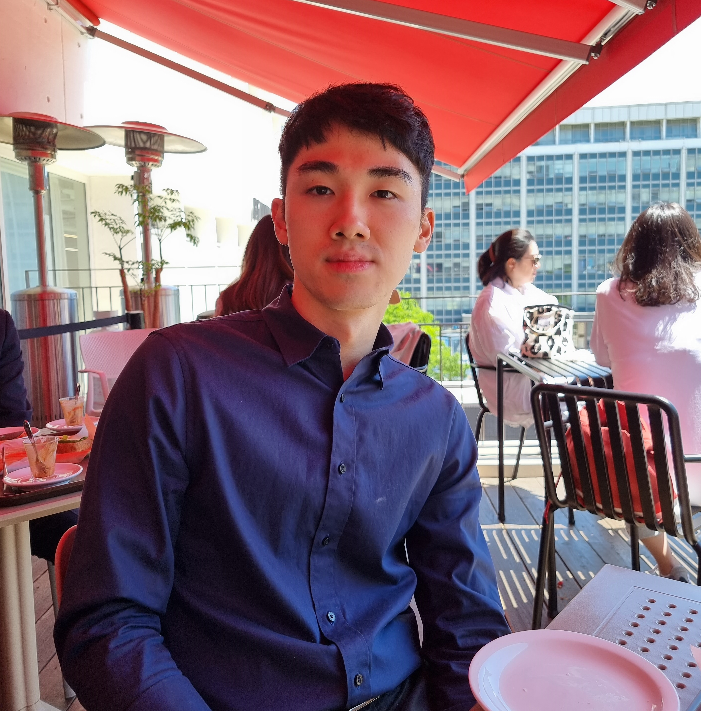

Tae Hun Cho

Contact
+82-10-9604-5704
chotae95@yonsei.ac.kr
50 Yonsei-ro, Seodaemun-gu, Seoul, Republic of Korea
Education
Yonsei University
Seoul, Korea
M.A. (Clinical Psychology)
Aug 2020 – Aug 2022
Thesis: Prefrontal cortical activation in Internet Gaming Disorder Scale high scorers during actual real-time internet gaming
: A preliminary study using fNIRS
Advisor: Soo Hyun Park
Cumulative GPA: 4.24 / 4.30
Yonsei University
Seoul, Korea
B.A. (Double Major in Psychology & English Language and Literature)
March 2014 – Aug 2020
Cumulative GPA: 4.02 / 4.30 ( high honors at graduation )
Research Experience
Postgraduate researcher
2022 - Present
Yonsei University - Applied Brain Cognition Laboratory
• Identification of stress levels using the fNIRS with comparison to ECG, GSR, and cortisol levels.
- Collected fNIRS, ECG, GSR, and cortisol data during/between stress induced tasks
- Provided ideas for the design of the experiment
- Analyzed fNIRS data and investigated correlations to cortisol levels
Graduate student researcher
2020 - 2022
Yonsei University - Stress, Trauma, and Affect Regulation Laboratory
• Investigating prefrontal cortical activation in internet gaming disorder scale high scorers during actual real-time internet gaming
using fNIRS
- Conceptualized and designed the research
- Recruited eligible participants and collected fNIRS data during actual real-time internet gaming
- Analyzed the collected data using a MATLAB based analysis tool
• Investigating the effect of single-session attention bias modification through resting-state fMRI activation differences
in individuals with high social anxiety
- Designed the method for analysis
- Preprocessed the collected data using the DPABI toolbox based on SPM12
- Analyzed the data using SPM12
Yonsei University - Applied Brain Cognition Laboratory
2020 - 2022
• Investigating functional connectivity alterations in emotional laborers using machine learning methodology
- Assisted in designing the research
- Analyzed behavioral measures using SPSS
- Interpreted the results of the research and elaborated its clinical significance
Undergraduate research assistant
2019
Yonsei University - Stress, Trauma, and Affect Regulation Laboratory
• Investigating the diagnostic validity of virtual reality based neuropsychological assessment battery
- Obtained neuropsychological data using a virtual reality tool
Publications
Cho, T. H., Nah, Y., Park, S. H., & Han, S. H. (2022). Prefrontal cortical activation in internet gaming disorder
scale high scorers during actual real-time internet gaming:
A preliminary study using fNIRS. Journal of Behavioral Addictions, 11 , 492-505.
Min, S., Cho, T. H., Park, S. H., & Han, S. H. (in press).
Functional connectivity with regions related to emotional regulation is altered in emotional laborers.
Korean Journal of The Science of Emotion and Sensibility .
Presentations
Cho, T. H., Hwang, Y. J., Nah, Y., Han, S., & Park, S. H. (2022, April 14-16)
DLPFC activations during real-time internet gaming in individuals with high IGD (Internet Gaming Disorder) scores: A fNIRS study [Poster presentation]. 2022 Spring Conference of the Korean Clinical Psychology Association (virtual conference).
link
Hwang, Y. J., Cho, T. H., & Park, S. H. (2022, April 14-16)
The moderating role of emotion regulation strategy on the relationship between negative affect and PTSD symptoms: Survivors of intimate partner violence [Poster presentation]. 2022 Spring Conference of the Korean Clinical Psychology Association (virtual conference).
link
Honors & Awards
Award for Excellent Poster Presentation
2022
Korean Clinical Psychology Association
Grand Award in the 2020 Seodaemun District Vitalization Project
2020
Yonsei University Campus Town Enterprise Organization
High Honors at Graduation
2020
Yonsei University
Highest Honors for Academic Excellence
Fall Semester 2019
Yonsei University
Honors for Academic Excellence
Spring Semester 2019
Yonsei University
Highest Honors for Academic Excellence
Fall Semester 2018
Yonsei University
Scholarships
Merit Academic Paper Award for Outstanding Thesis
2022
Yonsei University
Accelerated Bachelor’s and Master’s Degree Program Scholarship
2020 - 2022
Yonsei University (merit-based, full-tuition scholarship for 3 semesters)
Academic Excellence Scholarship
Spring Semester 2020
Yonsei University
Academic Excellence Scholarship
Fall Semester 2019
Yonsei University
Academic Excellence Scholarship
Spring Semester 2019
Alumni Association of the English Language and Literature Department of Yonsei University
Leadership
Assistant Administrator for Editing
2019 - 2021
Korean Journal of Clinical Psychology
Clinical Experience
Yonsei Psychological Health Center
Jun 2021- Dec 2021
• Clinical Practicum Trainee
Teaching Experience
Gil-dong Children’s Center
Seoul, Korea
• Tutored Korean, English and math to elementary and middle school students
• Assisted in daycare tasks and recreational activities for children
Memberships
Korean Psychological Association
2020 - Present
Korean Clinical Psychology Association
2020 - Present
Skills
Languages
Bilingual in Korean and English
Software Skills
SPSS, MATLAB (DPABI, EEGLAB, SPM), PsychoPy
Clinical Assessment Skills MMPI-2, SCID, WAIS, WISC